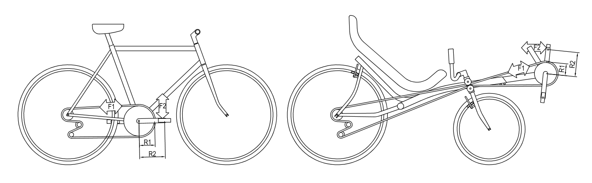

Contents | About | Contact
article 24, issue 10
Chain induced stresses in bicycle and recumbent frames
Stephen Nurse and George Durbridge
May 21, 2018
Abstract
Recumbent bicycles can be more aerodynamic than standard safety bicycles, and therefor travel faster for the same effort. They also offer ergonomic alternatives by providing a large seat to support the back, buttocks and shoulders while putting little stress on the crotch, arms and hands. With careful design, chain forces stressing the frame can be confined to small areas, permitting lighter and alternative frame constructions. While forces caused by rider weight dominate recumbent frame forces and chain forces are smaller, chain forces can be the dominant force in particular directions and flex the frame. When frames flex, energy is lost, so a frame that does not flex can improve pedalling efficiency.
Recumbents confine chain forces in different ways and this article explains and compares the differences. The author's front wheel drive cycles and their timber and aluminium frames are discussed. Although they use untreated aluminium RHS or structural plywood monobeams as frames and are homemade, they have endured for thousands of kilometres. Management of chain forces contributes to their rideability and longevity.
This is a qualitative guide to chain induced forces in recumbent cycles. Confining chain forces in recumbents to small frame regions can result in lighter, simpler, less energy absorbing frames and extra possibilities for frame joins and materials.
Chain and leg forces in safety and rear wheel drive recumbent bicycles:

Download the complete article PDF (1.4 MB)